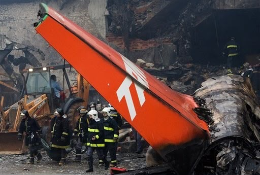

199 vítimas. Em 17 de julho de 2007, o Airbus A320 PR-MBK, que realizava o voo JJ3054, saiu da pista durante o pouso em Congonhas, atravessou a Avenida Washington Luís e atingiu instalações próximas ao aeroporto.
Em 17 de julho de 2007, o voo JJ3054 da TAM Linhas Aéreas, operado por um Airbus A320-233 de matrícula PR-MBK, decolou de Porto Alegre com destino ao Aeroporto de Congonhas, em São Paulo. A aeronave transportava 187 pessoas, sendo 181 passageiros e seis tripulantes ativos.
A aproximação para a pista 35L ocorreu sob condições de pista molhada e escorregadia. A aeronave pousou às 18h54, mas não desacelerou como previsto. Após perder o controle direcional, saiu lateralmente da pista, atravessou a Avenida Washington Luís e atingiu um posto de combustíveis e o edifício da TAM Express.
Todas as 187 pessoas a bordo morreram, além de outras 12 pessoas que estavam em solo, totalizando 199 vítimas fatais.
O Airbus A320 PR-MBK realizava a aproximação para a pista 35L de Congonhas. A tripulação havia sido informada de que a pista estava molhada e escorregadia.
Às 18h54, a aeronave tocou a pista. O reversor do motor nº 2 estava desativado conforme a MEL. Após o toque, os ground spoilers não foram defletidos e o autobrake não foi acionado.
A aeronave não desacelerou como previsto. Cerca de seis segundos após o toque do trem principal, os freios começaram a ser acionados pelos pedais, atingindo a máxima deflexão aproximadamente cinco segundos depois.
O A320 perdeu a reta para a esquerda e saiu lateralmente da pista 35L. A aeronave atravessou a Avenida Washington Luís em direção ao posto de combustíveis e ao edifício da TAM Express.
A aeronave colidiu com o edifício da TAM Express e com um posto de combustíveis. O impacto provocou um grande incêndio e a destruição completa da aeronave. As 187 pessoas a bordo e 12 pessoas em solo morreram.
A investigação do CENIPA identificou uma combinação de fatores humanos, operacionais, organizacionais e relacionados às condições do aeródromo. O relatório classificou diferentes fatores como contribuintes ou indeterminados, analisando a atuação da tripulação, as condições da pista, os sistemas da aeronave e os procedimentos operacionais.
O reversor do motor nº 2 havia sido desativado pela manutenção quatro dias antes do acidente devido a um vazamento no atuador interno. A aeronave foi liberada para operação de acordo com a MEL vigente.
A pista 35L de Congonhas estava molhada e escorregadia. O aeroporto vinha operando sob chuva nos dias anteriores, e a investigação analisou as condições de atrito, textura e drenagem da superfície da pista.
Após o toque, os ground spoilers não foram defletidos e o autobrake não foi acionado. O relatório registrou ainda que um dos manetes permaneceu em CL enquanto o outro estava em IDLE, situação que afetou o comportamento do sistema de controle de potência.
O acidente do voo TAM 3054 provocou uma ampla revisão das condições de operação em Congonhas e dos procedimentos relacionados a pousos em pistas molhadas. Entre as recomendações emitidas após o acidente estavam medidas relacionadas ao atrito e à macrotextura da pista, ao acompanhamento das condições de superfície e à operação de aeronaves com reversores inoperantes.
Em abril de 2008, a ANAC emitiu uma norma proibindo operações em Congonhas com a pista molhada quando nem todos os reversores de empuxo da aeronave estivessem disponíveis. O caso também reforçou a importância do gerenciamento de risco, da coordenação de cabine e da prevenção de excursões de pista.
Às 199 vítimas do voo TAM 3054.